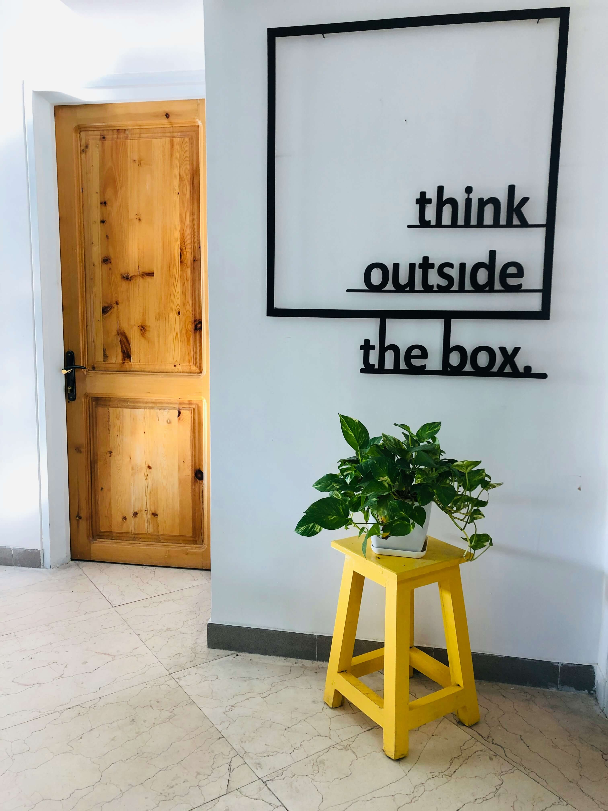

EduConnect is a powerful and user-friendly Learning Management System (LMS) built to simplify and enhance
the way education is delivered online. Designed for schools, universities, training institutes, and individual
educators, EduConnect bridges the gap between teaching and learning by offering a seamless digital
environment where interaction, engagement, and progress thrive.
Our platform focuses on three key pillars: simplicity, efficiency, and accessibility. Whether you're
a student exploring new subjects or an instructor managing multiple courses, EduConnect intuitive interface
makes navigation and communication effortless. It empowers learners to take charge of their educational
journey while giving educators the tools they need to deliver structured and impactful content.
EduConnect includes a wide range of essential features such as course creation, video lectures,
assessments, assignment submissions, discussion forums, and performance tracking — all within a
centralized platform. With real-time communication tools and progress analytics, both students and
teachers stay informed, connected, and engaged throughout the learning process.
One of EduConnect is strengths lies in its responsive design. Fully compatible with desktops, tablets,
and smartphones, the platform ensures that learners can access their coursework from anywhere, at any time.
This flexibility makes it ideal for today is fast-paced, mobile world where learning must fit around diverse
schedules and lifestyles.
